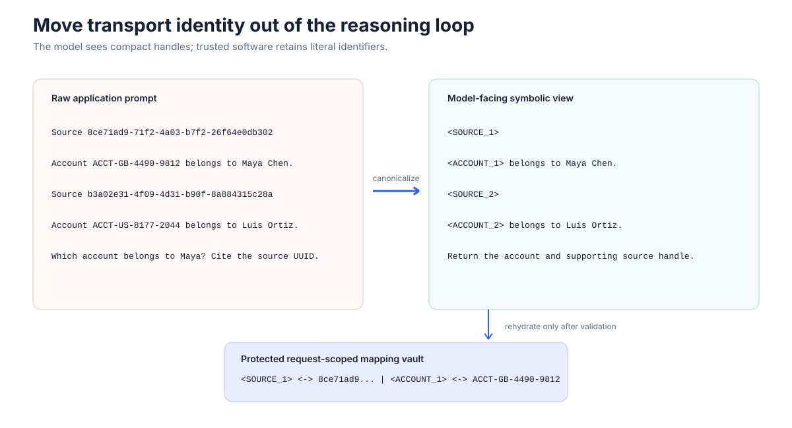
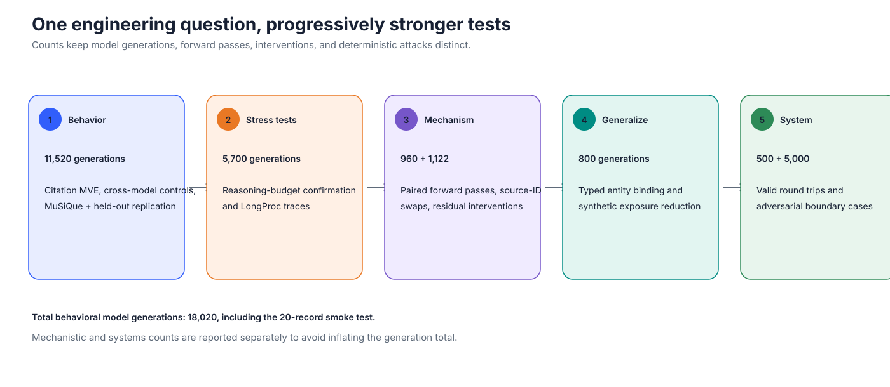
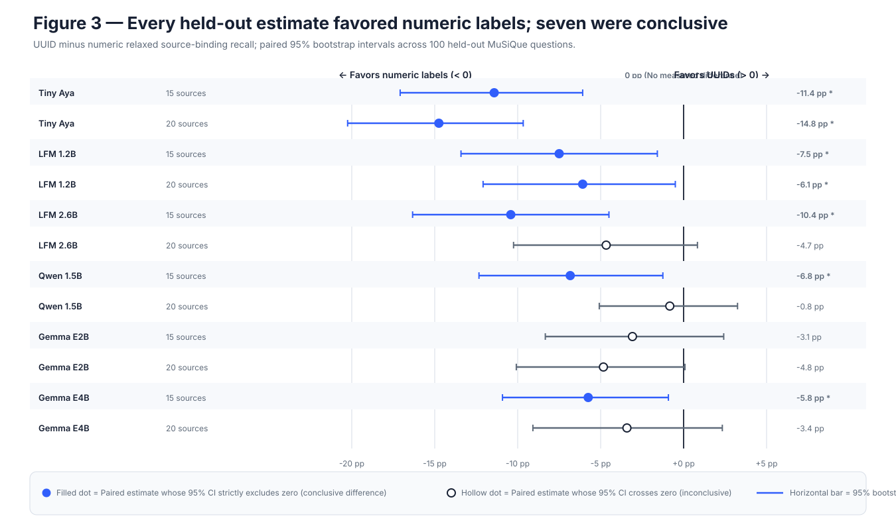
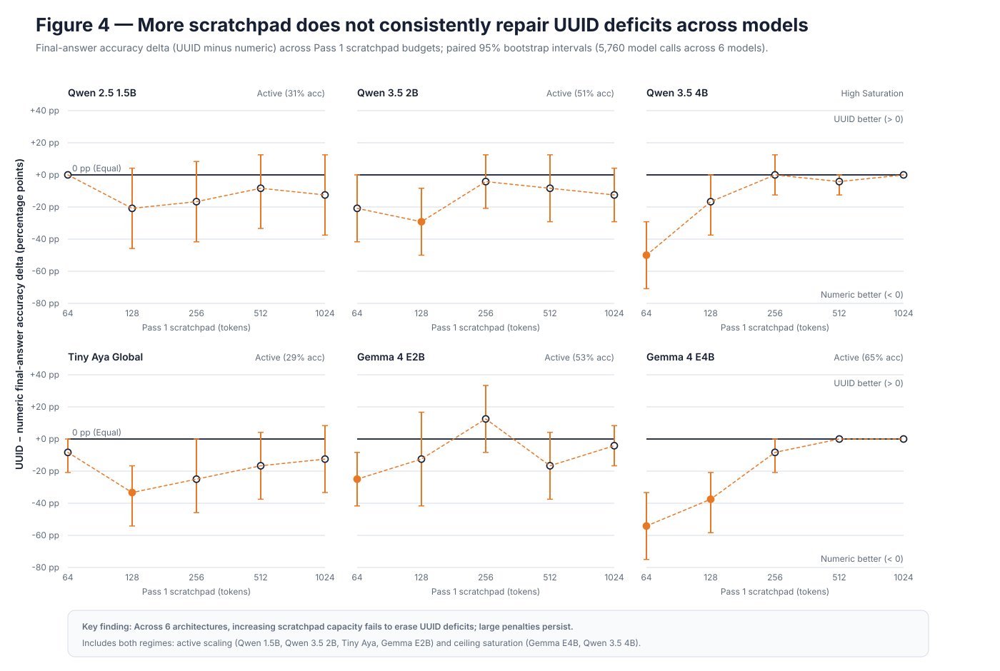
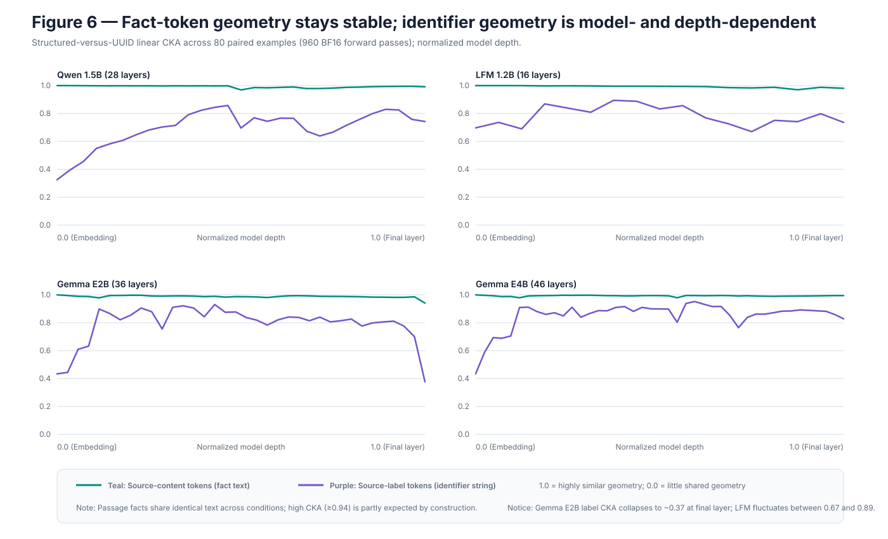
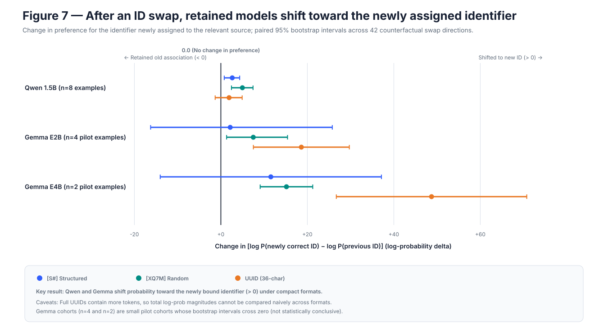
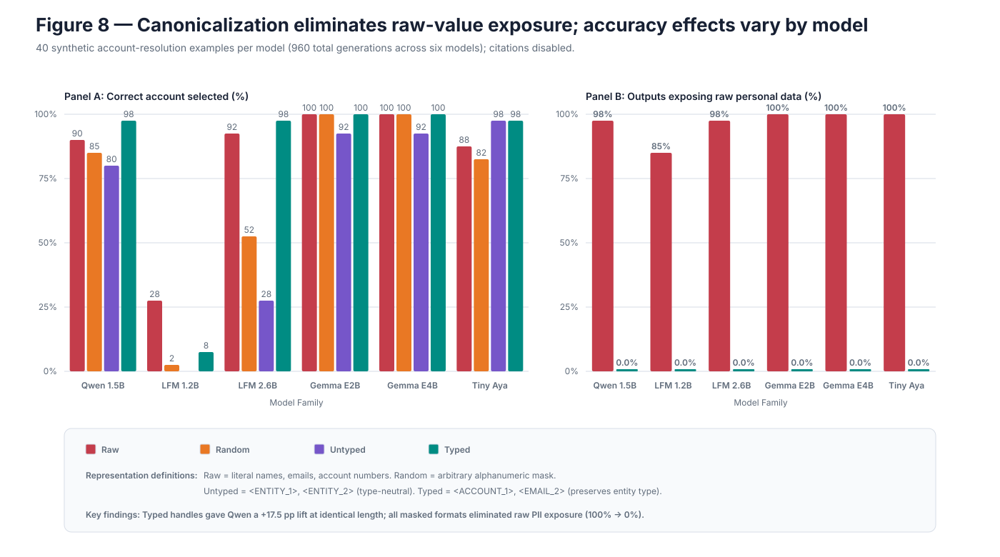
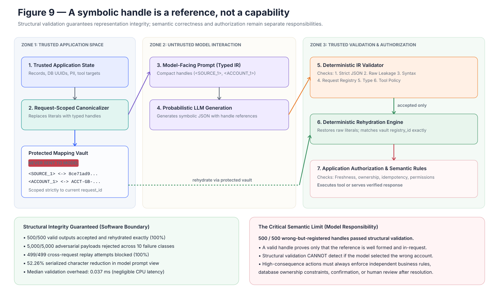

Structured handle
[S1]
235input tokens
1.7slatency
96%relaxed binding
Backend identifiers are convenient for software databases. Our experiments show why they are the wrong reasoning interface for an autoregressive language model.
Read the investigationWhen building retrieval-augmented generation (RAG) or tool-calling agents, engineers routinely pass database UUIDs directly into prompt context. Because those identifiers exist in backend tables, we assume the LLM acts as a transparent transport pipe. That assumption is expensive.
Source 8ce71ad9-71f2-4a03-b7f2-26f64e0db302:
Account ACCT-GB-4490-9812 belongs to Maya Chen.
Contact: maya.chen@internal.corp
Question: Which account belongs to Maya?
Cite the supporting source UUID.<SOURCE_1>:
<ACCOUNT_1> belongs to Maya Chen.
Contact: <EMAIL_1>.
Question: Which account belongs to Maya?
Return the account and supporting source handle.If characters are not the task, replace literals with request-scoped handles and keep the reversible map in software.

Figure 1 — Representation boundary between software and model. Trusted software replaces transport keys with request-scoped handles; literal values never enter model context.
This figure shows a representation boundary, not a new reasoning algorithm. The application begins with literal database identifiers and potentially sensitive values. Before constructing the prompt, trusted software replaces those values with request-scoped handles such as <SOURCE_1> and records the reversible mapping in a protected vault. The model sees the same semantic facts but not the backend identifiers. Its symbolic response is validated before trusted software uses the vault to restore the original values. Canonicalization controls representation and exposure; it does not prove that the model selected the correct record or had permission to act on it.
18,020 behavioral records / 23,620 calls
+70–94% input token tax
10 / 10 held-out cells worse with UUIDs
960 BF16 hidden-state passes
Across the native tokenizers used here, a UUID identifier averages roughly 25 to 35 tokens, while a typed handle such as <SOURCE_1> averages roughly 5.5 to 6. Across twenty retrieved passages, UUIDs add hundreds of tokens of high-entropy noise to prefill, consume KV-cache memory, risk literal copying errors at the output head, and needlessly expose backend keys to the model.
We set out to test: Is this merely a transport cost (tokens and latency), or does identifier surface form actively degrade the model's ability to track references and reason across passages?
To isolate representation effects without confounding content difficulty, our harness enforced strict controls:
[1], structured [S1], random compact [XQ7M], long hex, UUID, and typed entity handles) only at inference time.
Figure 2 — Experimental evidence program across five testing regimes. Keeping behavioral generations, stress tests, mechanistic measurements, generalization, and deterministic software tests separate.
This figure summarizes the evidence program and keeps different kinds of observations separate. The behavioral stages measure what models generate under controlled identifier formats. The stress tests ask whether additional scratchpad budget or verbose reasoning repairs the problem. The mechanistic stages inspect internal representations and intervene on them, without counting those forward passes as behavioral generations. The entity-resolution stage tests whether the idea generalizes beyond citations. Finally, the system stage evaluates deterministic software rather than model intelligence. The stages therefore strengthen different parts of the argument and should not be combined into one inflated sample count.
To systematically decouple transport overhead, attribution fidelity, cognitive capacity, and systems security, the investigation progressed through nine distinct stages across five testing regimes:
| Stage / Experiment | Core Question & Motivation | What We Did & Controlled |
|---|---|---|
| Stage 1: Controlled Synthetic Baseline | Does replacing compact keys with UUIDs degrade attribution even when factual content and prompt order are identical? | Tested Qwen across 5 vs. 20 retrieval passages; measured answer EM, relaxed binding recall, strict syntax citation, tokens, and latency. |
| Stages 2 & 3: MuSiQue Multi-Hop & Held-Out Confirmation | Does the UUID binding penalty survive real multi-hop reasoning, or was Stage 1 an artifact of synthetic questions? | Evaluated 5 model families on 100 balanced multi-hop MuSiQue questions (Stage 2), followed by 2,000 confirmatory generations on a strictly disjoint held-out cohort (Stage 3). |
| Stage 4: Dual-Label Ablation | Can engineers fix UUID degradation cheaply by keeping raw UUIDs in context and appending short aliases next to them? | Tested dual labels (Source <UUID> [S1]) against alias-only and UUID-only conditions across 15 and 20 sources in MuSiQue. |
| Ablation 1: Length vs. Bracket Priors | Is attribution loss driven by token length, tokenizer/prior bias around bracket characters, or generation-time literal emission? | Compared token-matched [1] vs. [S1] (identical length: 3.55 tokens) and ran a no-reproduction control removing citation emission. |
| Stage 5: Reasoning Budget Scaling | If UUIDs consume internal bookkeeping capacity, can giving models a larger scratchpad monotonically erase the penalty? | Tested 5,600 two-pass generations (11,200 model calls) across 5 visible scratchpad budgets (64 to 1,024 tokens) to check for monotonic recovery. |
| LongProc Reality Check | Does verbose output indicate sound multi-step deduction, or can models generate thousands of tokens while losing state? | Evaluated 25 belief-state instances with deterministic reference traces, measuring correct prefix, final-answer accuracy, and full trace accuracy. |
| Stage 6: Representation Geometry (Linear CKA) | Where inside the transformer does attribution break down? Do UUIDs distort semantic fact tokens or only identifier states? | Extracted residual-stream states across 960 paired BF16 passes (80 examples) and computed Linear CKA across normalized network depth. |
| Stage 7: Counterfactual ID Swaps & Patching | Does shared geometry imply shared causal circuits, and at which layer does the model lock in its source-binding decision? | Executed 66 counterfactual identifier swaps and 1,056 residual activation patches to identify model-specific onset layers. |
| Stage 8: Cross-Domain Entity Resolution | Does request-scoped canonicalization help tasks outside citations, and does it eliminate sensitive data exposure? | Evaluated 800 generations across customer account resolution under Raw, Random, Untyped, and Typed (<ACCOUNT_1>) formats. |
| Stage 9: Systems Boundary & Stress Testing | Can deterministic software guarantee representation integrity without fine-tuning, and where is its semantic boundary? | Tested ModelIR and MappingVault against 5,000 adversarial payloads across 10 failure classes and 500 semantic bypass cases. |
Our initial tests revealed an immediate trap in citation evaluation. When we tested Qwen2.5-1.5B on 20-source prompts, its strict citation accuracy was 7% for structured labels [S1] versus 34% for UUIDs.
On the surface, UUIDs appeared five times better. But inspecting the raw outputs revealed the mismatch: Qwen selected the correct structured source in 66% of cases, but often emitted S7 instead of [S7]. Exact-match evaluation marked those citations wrong. With UUIDs, the model selected the right source less often, but retained the formatting wrapper more reliably when it did.
To prevent surface syntax from masquerading as reasoning failure, we decomposed citation evaluation into a multi-stage pipeline: Solve → Select Evidence → Bind to Handle → Reconstruct Literal → Format Syntax. Throughout this report, we standardize on relaxed source binding (mapping emitted identifiers back to gold sources while tolerating surface wrapper variations).
This investigation connects three previously disparate threads: Feng & Steinhardt (2023) demonstrated that transformers track entities across long contexts by binding them to identifier tokens; the ALCE benchmark (Gao et al., 2023) established citation recall/precision metrics for RAG, which our metric decomposition clarifies; and the CaMeL framework (Debenedetti et al., 2025) and Dual-LLM pattern (Willison, 2023) propose isolating untrusted data and privileged tools. Our boundary reduces literal exposure and rejects malformed symbolic outputs; it does not make retrieved text trustworthy or neutralize prompt injection.
Stage 1 Motivation: Before evaluating complex pipelines, we establish an uncontaminated behavioral baseline under laboratory conditions: when we manipulate only the identifier surface form—holding factual text, question wording, and distractor sets identical—how much do high-entropy UUIDs inflate token counts, increase latency, and degrade attribution accuracy?
These are the paired Qwen Stage 1 results. Toggle the number of sources: task content stays matched while only the identifier representation changes.
Structured handle
[S1]
235input tokens
1.7slatency
96%relaxed binding
UUID
8ce71ad9…
386input tokens
4.4slatency
63%relaxed binding
At 5 sources, structured handles yield 96% relaxed binding vs. 63% for UUIDs. At 20 sources, binding collapses from 66% to 37%, latency jumps from 5.3s to 12.0s, while answer correctness remains stable (90% vs. 92%).
Qwen2.5-1.5B saw 100 paired fictional citation problems at five sources and another 100 at twenty sources under each representation. Only the identifiers changed. Across all four initial models at twenty sources, UUIDs added roughly 70–94% input tokens and 77–129% latency.
Crucially, answer accuracy remained statistically unchanged (90% vs. 92% at 20 sources). The model knew the answer; it was specifically the attribution and pointer tracking that collapsed.
Capacity and decoding controls also interact directly with identifier format. On LiquidAI's architecture, LFM 1.2B suffered uninhibited generation loops under UUIDs, hitting token caps on 100% of 5-source runs. Scaling to LFM 2.6B with thinking suppressed erased this failure completely: 5-source UUID relaxed binding reached 100% (97% strict citation) in 37 tokens with 0% truncation, and 20-source binding rose to 60.0% (+27 pp over 1.2B).
The binding direction was not universal. Gemma E2B reversed the Qwen/LFM pattern: UUID binding exceeded structured-label binding by 37 points at five sources and 25 points at twenty sources, with both paired intervals excluding zero. Gemma E4B was at ceiling for both. This counter-result motivated the disjoint, held-out MuSiQue confirmation below.
| Sources | Identifier | Answer | Strict citation | Relaxed binding | Input tokens | Latency |
|---|---|---|---|---|---|---|
| 5 | Structured | 100% | 68% | 96% | 234.6 | 1.74 s |
| 5 | UUID | 98% | 29% | 63% | 385.5 | 4.36 s |
| 20 | Structured | 90% | 7% | 66% | 639.3 | 5.27 s |
| 20 | UUID | 92% | 34% | 37% | 1,237.4 | 11.96 s |
Stages 2 & 3 Motivation: Synthetic single-hop citation prompts isolate representation variables, but production retrieval involves noisy, multi-hop evidence. We set out to test: Does the UUID source-binding deficit persist when queries require multi-step reasoning across 15 to 20 passages? And is it consistent across diverse model architectures, or was Stage 1 an artifact of a specific benchmark?
Synthetic passages are clean. To test whether the UUID binding penalty survives noisy, multi-hop retrieval, we evaluated the models on MuSiQue: 100 balanced questions consisting of 34 two-hop, 33 three-hop, and 33 four-hop examples, screened across all five tokenizers to fit within 2,000–3,700 tokens across 15 and 20 passages.
Across an initial 7,500 generations and an independent confirmatory cohort of 2,400 generations on held-out questions across six models, UUID relaxed source-binding recall was lower in all 12 model/source-count comparisons, with 7 of 12 paired 95% bootstrap intervals strictly excluding zero.

Figure 3 — Held-out MuSiQue binding effects. Every held-out estimate favored numeric labels; seven were conclusive (UUID minus numeric relaxed source-binding recall across 12 model/source-count cells in held-out MuSiQue, 2,400 generations across six models).
Each row compares the same held-out questions under UUID and numeric source labels. A value of −10 percentage points means that UUIDs reduced relaxed source-binding recall by ten points relative to numeric labels. The dot is the observed paired difference, and the horizontal line shows its 95% bootstrap interval. All twelve point estimates fall to the left of zero, so every observed comparison favored numeric labels. Seven intervals remain entirely below zero, providing clearer evidence of a difference; five cross zero and should be treated as directionally consistent but statistically inconclusive. Answer F1 did not show the same pattern, so the result concerns attribution rather than general question answering.
Stage 4 Motivation: When confronted with UUID retrieval taxes, engineers frequently attempt a common workaround: keeping the raw UUID in context while appending a compact alias next to it (e.g., Source 8ce71... [S1]). We tested whether this "dual label" strategy successfully provides the benefit of aliases, or simply imposes the dual cognitive burden of both representations.
In MuSiQue Stage 4, dual labels failed to reliably recover alias-only performance. The result is consistent with extra representation burden, but Stage 4 does not identify an attention-head mechanism. You cannot remove the UUID tax by adding more text.
Having established the transport cost and binding penalty, we designed targeted ablations to test alternative explanations: Is it just prompt length? Can Chain-of-Thought reasoning fix it? And where in the transformer stack does binding break?
Ablation 1 Motivation: Before accepting that UUIDs damage reasoning, we must eliminate simpler mechanical confounds: Is attribution loss driven by identifier token length alone, prior tokenizer biases for specific bracket syntax, or the requirement to reproduce high-entropy characters at generation time?
Could the structured advantage over UUIDs simply be that structured labels are shorter? We ran a token-matched control comparing [1] with [S1] across four models. Both representations averaged exactly 3.55 tokens per identifier and identical prompt lengths (639 tokens).
On Qwen, numeric labels beat structured labels by 67 percentage points on strict citation formatting, but relaxed source binding differed by only 8 points and its confidence interval spanned zero. Length matters, but tokenization boundaries and formatting priors dominate strict scores.
Next, we tested the no-reproduction control: leaving UUIDs in the prompt for reading, but removing the requirement to cite them in the output. When citation reproduction was removed, LiquidAI LFM answer F1 improved by +3.5 points, and Gemma E4B answer F1 improved by +5.1 points. In those cells, reproduction was associated with lower answer F1; the control does not isolate literal emission from the stricter output instruction.
Stage 5 Motivation: A popular hypothesis in prompt engineering is that high-entropy identifiers consume “internal working memory” or bookkeeping capacity. If true, providing the model with a larger visible reasoning budget (Chain-of-Thought scratchpad) should allow it to “think through” the bookkeeping, causing the UUID deficit to monotonically disappear as the token budget expands.
A seductive hypothesis is that opaque identifiers consume internal bookkeeping capacity, and that giving the model more reasoning scratchpad tokens should allow it to "think through" the bookkeeping, smoothly erasing the UUID penalty.
We tested this across 5,600 two-pass generations (11,200 model calls): 2,400 pilot generations across five models and 3,200 separately seeded confirmatory generations in retained cells. Pass 1 received a visible scratchpad cap of 64, 128, 256, 512, or 1,024 tokens. Pass 2 received only that generated scratchpad and had 128 tokens to emit the answer.

Figure 4 — Reasoning-budget experiment. More scratchpad did not consistently repair UUID performance (UUID minus numeric final-answer accuracy across visible scratchpad budgets, 64 to 1,024 tokens, across 5,600 two-pass generations / 11,200 model calls).
The experiment used two passes. Pass 1 received the original multi-source problem and a scratchpad limit ranging from 64 to 1,024 tokens. Pass 2 saw only that scratchpad and produced the final answer. Each point reports final-answer accuracy under UUID identifiers minus accuracy under numeric labels. Values below zero favor numeric labels; values above zero favor UUIDs. Qwen remained mostly below zero, Gemma E2B changed direction sharply, and Tiny Aya moved toward parity at larger budgets. Because the effects do not move consistently toward zero as the budget grows—and most intervals are broad—the data reject a universal monotonic recovery story. They do not prove why Gemma E2B changes direction.
The monotonic hypothesis failed. Every confirmatory slope estimate and every low-to-high interaction interval included zero. Additional reasoning budget did not smoothly erase the UUID penalty.
The Gemma E2B scratchpad anomaly remains an inference: At 64 tokens, Gemma E2B showed a -35.0 pp UUID deficit. At 256 tokens, UUIDs beat numeric by +50.0 pp. The traces are consistent with an output-length confound: UUID scratchpads were longer, and the UUID condition hit the cap on every 64- and 128-token pilot run. That may have preserved more information for Pass 2, but this experiment does not establish the mechanism. When reproduction was removed at 512 and 1,024 tokens, Gemma E2B reached 95% and 100% accuracy.
UUIDs did reliably increase total generated output in 14 of 15 confirmatory cells. The transport and generation cost is universal; the cognitive scratchpad interaction is not.
Stage 6 Motivation: To move beyond external behavioral outputs, we inspect the transformer's internal residual stream across all layers: When high-entropy UUIDs are inserted into the prompt, does the model fail because the factual semantic representations of the passages are corrupted, or do the passage representations remain stable while only the identifier-binding states diverge?
In Stage 6, we recorded residual-stream hidden states from 960 paired forward passes across official BF16 checkpoints of Qwen, LFM, Gemma E2B, and Gemma E4B on 80 semantic examples rendered under structured, random compact, and UUID formats.
When comparing internal activation vectors across different prompt formats (e.g., structured [S1] vs. high-entropy UUIDs), standard distance metrics like Euclidean distance or raw cosine similarity fail because neural networks do not operate on fixed, canonical coordinate axes:
Mathematically, given activation matrices $X \in \mathbb{R}^{n \times d_1}$ and $Y \in \mathbb{R}^{n \times d_2}$ from $n$ prompt examples across conditions, Linear CKA computes centered linear Gram similarity matrices ($K = X X^T$, $L = Y Y^T$) and evaluates their normalized Hilbert-Schmidt Independence Criterion (HSIC):
Linear CKA is strictly invariant to orthogonal rotations ($\text{CKA}(XQ, Y) = \text{CKA}(X, Y)$) and isotropic scaling ($\text{CKA}(\alpha X, Y) = \text{CKA}(X, Y)$), outputting a scalar between $0.0$ (no shared geometry) and $1.0$ (identical pairwise geometry). In Stage 6, it allows us to isolate representation geometry cleanly: Does surrounding factual text with UUIDs distort the model's internal geometry of the facts themselves (which would yield CKA ≪ 1.0), or does it preserve fact geometry while only altering identifier binding states?

Figure 6 — Representation geometry across layers. Fact-token geometry stays stable; identifier geometry is model- and depth-dependent (structured-vs-UUID linear CKA similarity across normalized model depth across 960 paired hidden-state passes, 80 examples).
Linear CKA compares the geometry of hidden representations across the same 80 examples under two prompt formats: structured source labels and UUIDs. A value near one means that the relationships among examples are represented similarly in both conditions; it does not mean that individual vectors or model outputs are identical. The teal curves remain above roughly 0.94 because the passage facts are unchanged and surrounding UUIDs do not substantially reorganize their representation. Identifier-label states begin less aligned and often become more similar in middle layers, but the pattern varies by architecture and Gemma E2B diverges sharply at the final layer. This is correlational evidence about representation geometry, not proof of a particular causal circuit.

Figure 7 — Counterfactual source-ID swaps. After an ID swap, models do not all rebind to the relevant source (mean change in log P(newly correct ID) minus log P(previous ID) after prompt-level ID swaps, 66 counterfactual swaps and 1,056 activation interventions).
This intervention changes only which identifier is attached to the relevant passage. The facts, question, distractors, and set of available identifiers remain unchanged. The plotted effect asks whether the prompt swap moves the model’s probability from the formerly correct identifier toward the identifier now attached to the relevant source. Positive values indicate successful rebinding; negative values indicate persistence of the old association. Qwen is positive across formats, whereas LFM is negative for the compact formats. The Gemma estimates are positive but come from very small pilot cohorts and should not be treated as stable population estimates. Because full UUIDs contain more tokens, total sequence log-probability magnitudes are not directly comparable across identifier formats.
Linear Centered Kernel Alignment (CKA) confirmed that source-content geometry is largely format-invariant (per-model minimum CKA ranged from 0.941 to 0.979). Because fact tokens share identical text across conditions, high correlation is expected; the important finding is that surrounding UUIDs do not distort the semantic representation of the passage text. Near citation generation, representations diverge into format-specific surface realizations.
Stage 7 Motivation: Hidden-state geometry (CKA) is purely correlational—it shows that representations are aligned, but does not prove which representations causally determine the output. We use counterfactual identifier swaps and activation patching to test: Does the model actively rebind its prediction to the newly assigned identifier, and at which specific layer does the binding circuit lock in?
Stage 7 performed 66 counterfactual source-ID swaps and 1,056 activation interventions. The critical finding: shared representational geometry does not imply a shared causal circuit. Qwen and the Gemma pilots followed the source to its new identifier, but LiquidAI LFM reacted in reverse under compact IDs, reinforcing its prior binding. Final-layer residual patching transferred ~100% of the swap effect in all models, but the onset layer where binding becomes locked varied sharply: layer 24 in Qwen versus layer 29 in Gemma E2B.
The empirical findings culminate in an operational reference architecture: a request-scoped typed Symbolic IR that decouples representation integrity from probabilistic generation.
Stage 8 Motivation: Citations are only one application of identifiers. In production agents and retrieval pipelines, models manipulate sensitive customer records (names, account numbers, emails). We set out to test: Does request-scoped canonicalization improve non-citation entity resolution? Can typed handles (<ACCOUNT_1>) help models track entities across contexts better than arbitrary masks while guaranteeing 0% literal PII leakage in outputs?
Stage 8 tested synthetic account resolution across 960 generations across six models with citations disabled. Prompts contained 15 or 20 customer records rendered as raw PII, arbitrary masked strings, untyped handles, or typed handles (<ACCOUNT_1>, <EMAIL_2>).

Figure 8 — Typed entity canonicalization. Canonicalization eliminates raw-value exposure; accuracy effects vary by model (Panel A: Account-resolution accuracy by model and representation; Panel B: Outputs containing raw PII across 960 model generations across six models).
Each model resolved synthetic customer accounts from prompts containing the same records under four representations. “Raw” includes literal names, emails, and account numbers. “Random” replaces them with arbitrary masks. “Untyped” uses consistent but semantically neutral handles, while “typed” uses handles such as <ACCOUNT_1> and <EMAIL_2>. Typed handles improved Qwen by 17.5 percentage points relative to untyped handles and helped Tiny Aya relative to random masking. Gemma was near ceiling across conditions, while LFM 1.2B performed poorly whenever values were masked. Crucially, scaling LiquidAI to LFM 2.6B fully recovered performance: typed handles reached 97.5% mean accuracy (+70.0 pp over untyped). Separately, every masked representation reduced raw-value output exposure to zero in this dataset. Thus canonicalization reliably controlled literal exposure, but its task-accuracy effect depended on model capacity and architecture.
Qwen2.5-1.5B gained +17.5 percentage points with typed handles over untyped handles at identical prompt lengths (97.5% vs. 80.0%). Tiny Aya gained +15.0 points with typed handles over arbitrary masking. LFM 2.6B demonstrated a dramatic capacity reversal over 1.2B, reaching 97.5% mean accuracy under typed handles (+70.0 pp over untyped, 95% CI: [+52.5, +85.0]). All masked conditions completely eliminated raw names, emails, and account numbers from outputs (0% vs. 85–100% in raw prompts).
Instead of passing raw backend IDs to the model, trusted software interposes a canonicalizer and mapping vault:

Figure 9 — Symbolic IR trust boundary. A symbolic handle is a reference, not a capability (the request-scoped Symbolic IR boundary validates structural representation before rehydration; semantic correctness and authorization require independent application checks).
The canonicalizer creates typed request-scoped handles and stores their literal values in a protected vault. The model receives only the symbolic representation. Its response is treated as untrusted: a deterministic validator checks the JSON shape, raw-value leakage, handle syntax, request membership, type consistency, and allowed action schema. Only an accepted response may be rehydrated. This boundary successfully accepted 500 valid round trips, rejected 5,000 malformed or unauthorized symbolic payloads, and blocked 499 cross-request replay attempts. However, all 500 deliberately wrong-but-registered handles passed structural validation. A valid handle proves only that the reference is well formed and belongs to the request; ownership, semantic correctness, freshness, and authorization still require separate checks.
Below is a runnable example using the tested reference implementation in this repository:
from symbolic_ir.ir import (
CanonicalizationPolicy, ValidationPolicy,
canonicalize_request, rehydrate_response,
validate_symbolic_output,
)
exchange = canonicalize_request(
request_id="request-42",
instruction="Return the account for Maya Chen.",
state={"customer": {
"name": "Maya Chen",
"account": "ACCT-GB-4490-9812",
}},
policy=CanonicalizationPolicy({"account": "ACCOUNT"}),
)
# Send only exchange.model_ir.to_model_payload() to the model.
model_output = (
'{"answer":"<ACCOUNT_1>","references":[],"actions":[]}'
)
result = validate_symbolic_output(
model_output,
vault=exchange.vault,
policy=ValidationPolicy(
answer_types=("ACCOUNT",), reference_types=(),
),
)
if not result.accepted:
raise ValueError(result.issues)
resolved = rehydrate_response(result, vault=exchange.vault)
assert resolved.answer == "ACCT-GB-4490-9812"The library also validates strict response shape, leakage, request-local registry membership, handle types, and authorized tool arguments before rehydration.
Stage 9 Motivation: Having observed that opaque backend literals degrade attribution and expose sensitive data, we needed to demonstrate an operational production boundary: Can a deterministic, sub-millisecond software layer manage request-scoped handle mappings outside model context, validate symbolic responses against strict security schemas, and reject adversarial attacks without model fine-tuning? And what is the fundamental boundary where software validation ends and application authorization begins?
To verify the deterministic boundary, we subjected the reference implementation to an adversarial regression suite of 500 synthetic requests and 5,000 adversarial payloads across ten failure classes. All 500 valid responses were accepted and rehydrated without loss; all 5,000 malformed, leaked, mistyped, and unregistered-handle outputs were rejected; and all 499 cross-request handle replay attempts were blocked. The canonical model view reduced serialized prompt characters by 52.26%, with 0.037 ms median validation overhead. Stage 9 did not record tokenizer counts, so no token-reduction figure is claimed.
In 500 deliberately crafted test cases, we fed the validator a response containing a well-formed handle registered to the current request, but pointing to the wrong account.
500 / 500
well-formed wrong-target handles passed structural validation. Structural validation ensures representation integrity, not task correctness. A valid handle is a reference, not an authorization token.
This is a fundamental principle of software security: deterministic validation can catch malformed or unregistered handles, but detecting a semantically wrong registered handle requires application authorization, business rules, confirmation, or human review.
| Workload | Recommendation | Why? |
|---|---|---|
| RAG Retrieval Passages | Alias it | Document UUIDs are transport pointers. Aliasing saves 70–94% tokens and eliminates bracket-parsing failures. |
| Tool / Agent Object IDs | Alias it | Database keys, session tokens, and transaction IDs should never be emitted directly by the LLM. |
| Privacy / PII Redaction | Alias it | Scrub account numbers and emails before prompting; rehydrate locally after generation. |
| Code Diffs & Refactoring | Keep literal | Variable names, function signatures, and line content carry syntax meaning. |
| URL Path & Domain Analysis | Keep literal | Subdomains, query parameters, and paths contain semantic tokens needed for categorization. |
| Quoted Legal / Source Text | Keep literal | Verbatim quotes require preserving exact surface morphology. |
Rule of thumb: Pointers and addresses get request-scoped handles. Payloads and text under analysis stay literal.
Our behavioral and mechanistic experiments ran on local models between 1.2B and 4B parameters. While the transport cost (tokens, latency, KV-cache) applies equally to 70B+ and proprietary models (GPT-4o, Claude 3.5 Sonnet), frontier models possess much higher attention capacity and may exhibit higher baseline UUID binding fidelity. Testing the held-out MuSiQue cohort on frontier APIs remains an open research priority.
Measured input prompts ranged from roughly 230 to 4,000 tokens, using 4K–8K context windows. At 100K+ scale, identifier token bloat can accumulate into substantial KV-cache use, but attention dilution there requires dedicated measurement. Maintaining a MappingVault also requires request-scoped state across distributed workers or multi-turn agent conversations.
Empirical Figures 3–8 are generated from checked-in processed result artifacts; Figures 1, 2, and 9 are deterministic code-generated schematics. Local raw logs are hash-recorded for provenance but are not tracked in Git. The deterministic test suite covers canonicalization, registry isolation, parsing, evaluation, resumption, and the system boundary.
python3 scripts/run_tests.py
python3 blog/scripts/build_figures.py
# Run representative experiment stages
python3 scripts/run_musique_stages.py --config configs/musique/stages_2_4_qwen15b.yaml
python3 scripts/run_stage6.py --config configs/experiments/stage6_qwen25_15b.yaml
python3 experiments/09_system_ir.py --requests 500 --records-per-request 20